Consulta y idea
Blackwork, anime y diseno a medida
Drago Tattoo
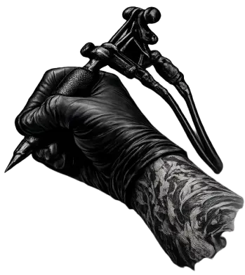
Tu idea llevada a la piel.
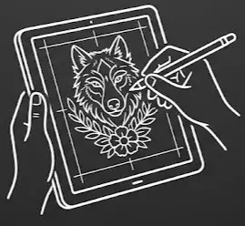
Diseno de la pieza
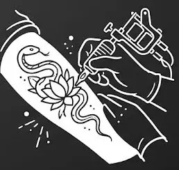
Sesion final
Texto de subtitulo
Texto de sobre mi
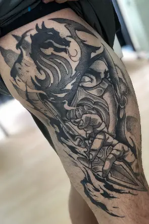
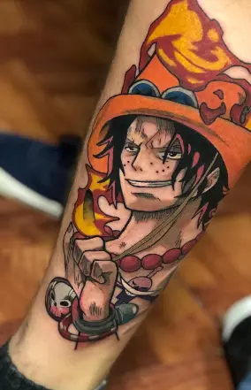
Trabajo cada pieza desde la idea inicial hasta el ultimo detalle, buscando que el tatuaje tenga presencia, lectura y una identidad que realmente conecte con quien lo lleva.
Me enfoco en blackwork, anime y composiciones pensadas para fluir con el cuerpo, cuidando el proceso completo para que la experiencia se sienta clara y personalizada.
Diseno con criterio, sesion con calma y resultado con caracter.
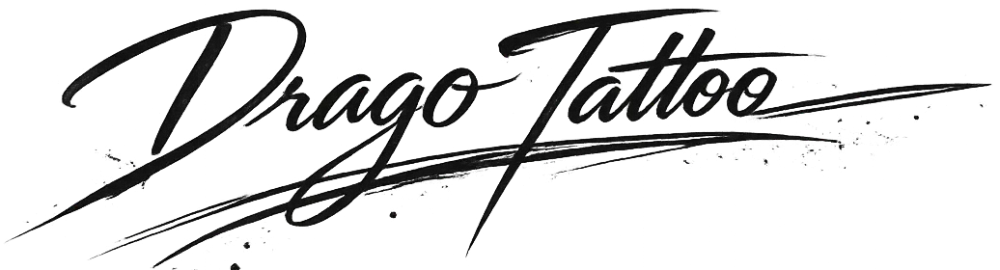
Proceso de trabajo
Del primer trazo al resultado final
01
Brazo limpio
Base clara y ubicacion.
02
Stencil preciso
Posicion y lectura del diseno.
03
Lineas base
Lineas limpias y estructura firme.
04
Resultado final
Contraste, detalle y terminacion.
Piezas recientes
Trabajos con presencia, contraste y lectura
Separe la galeria en blackwork y anime para que la lectura sea mas clara y siga con la misma atmosfera de la landing.
Blackwork
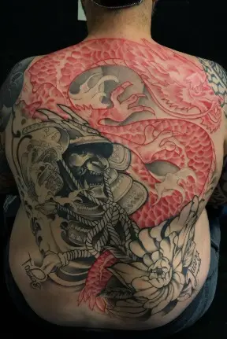
Pieza protagonista con contraste fuerte
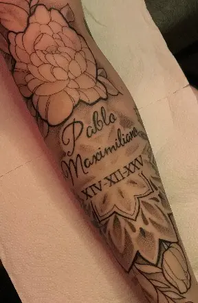
Lectura vertical y detalle
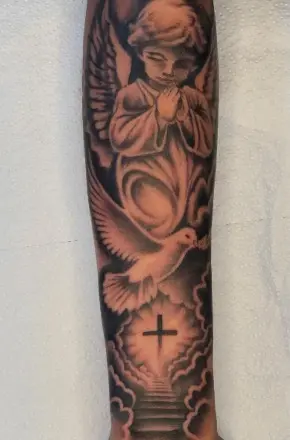
Sombras limpias
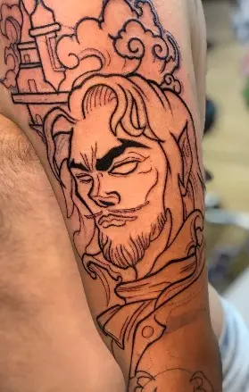
Contraste con presencia
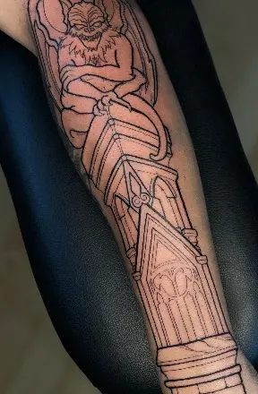
Volumen y lectura
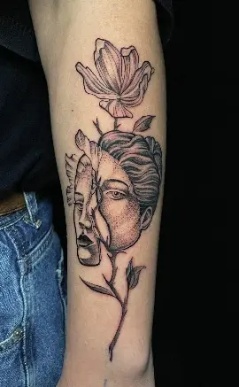
Pieza cerrada con caracter
Anime
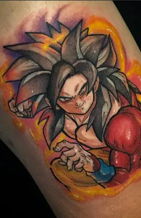
Narrativa en piel
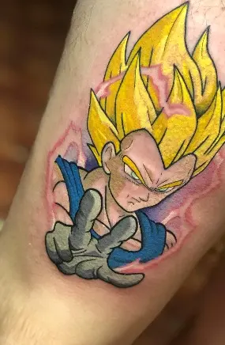
Lineas y expresion
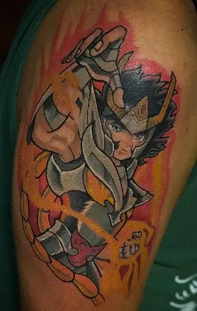
Escena con impacto visual
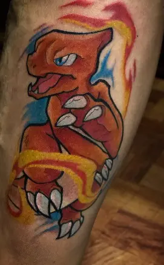
Contraste mas sutil
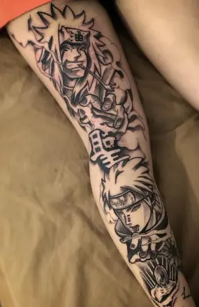
Composicion vertical
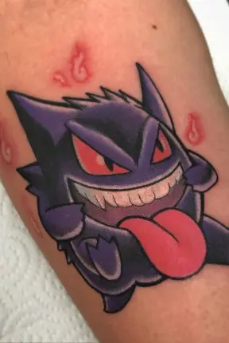
Detalle y lectura clara
Reserva tu turno
Trae tu idea y la bajamos a una pieza con identidad
Deja tus datos, una referencia de estilo y la zona del cuerpo. La respuesta puede llegar por mail o por Instagram, segun lo que prefieras.
Instagram @drago_tattoo
Contacto WhatsApp o Instagram
Atencion Solo con turno previo